Aros de flores hechos a mano
En Karivé Joyas hacemos aros de flores artesanales de arcilla polimérica a mano, uno por uno, en Santiago de Chile. Aros hechos de arcilla polimérica y acero inoxidable. Encuentra aquí los 28 modelos disponibles de la colección Flores, desde $2.990, con envío a todo Chile.
Modelos de la colección Flores
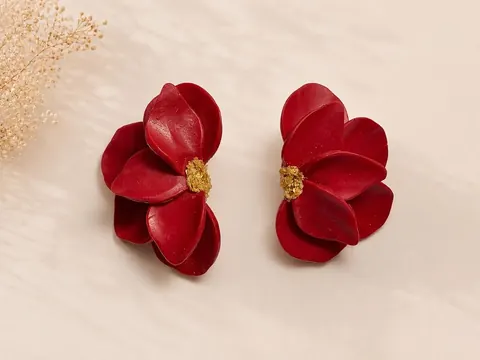
Aros Media Flor Roja$8.990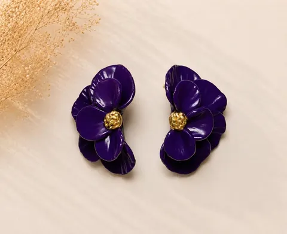
Aros Media Flor Morada$10.990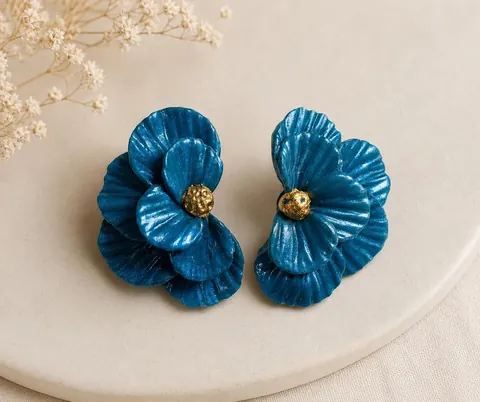
Aros Media Flor Petróleo$10.990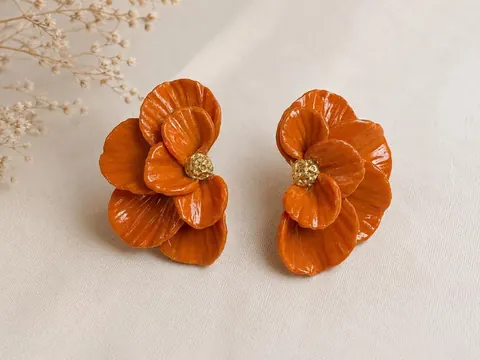
Aros Media Flor Naranja$10.990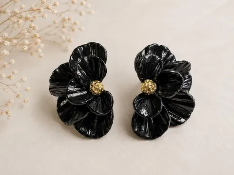
Aros Media Flor Negra$10.990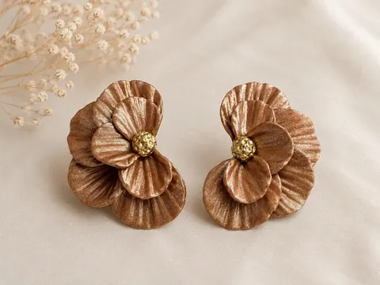
Aros Media Flor Cobre$10.990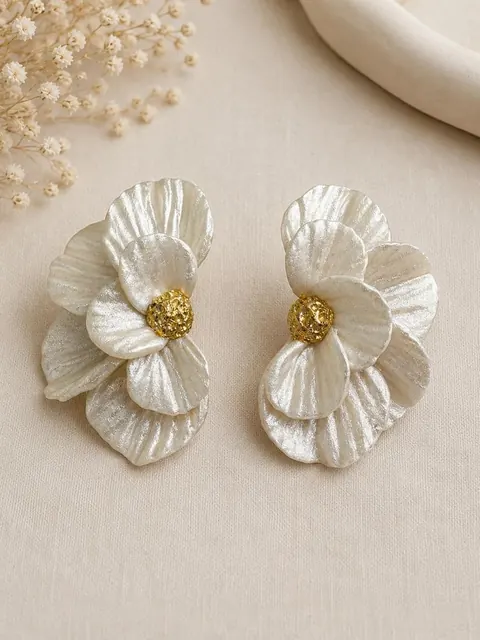
Aros Media Flor Blanco Perla$10.990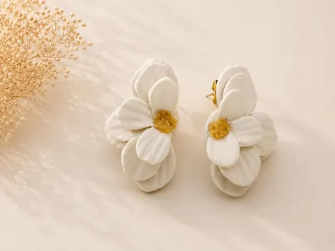
Aros Media Flor Blanco$7.990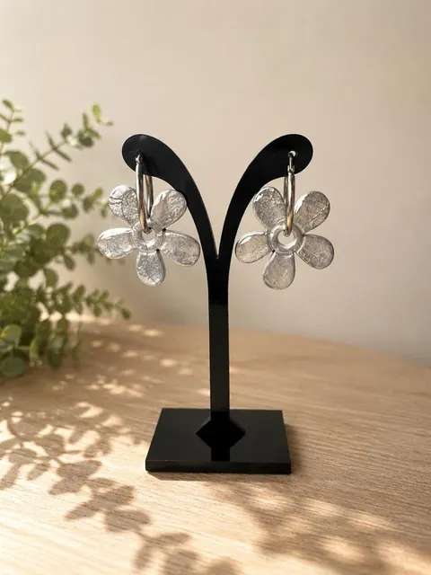
Argollas Flores Plateadas$10.990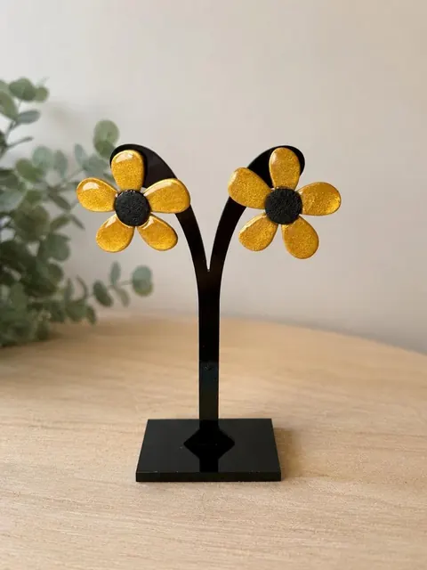
Aros Flores Doradas$9.990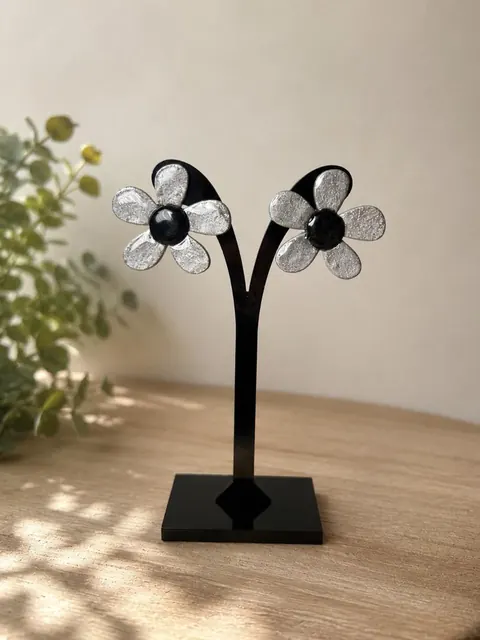
Aros Flores Plateadas$9.990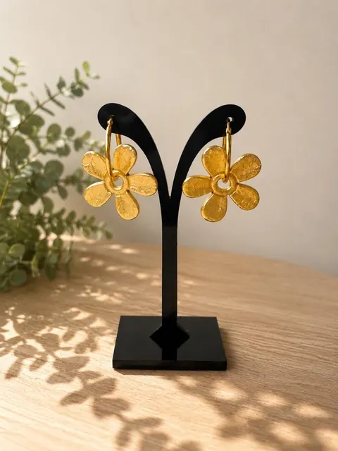
Argollas Flores Doradas$10.990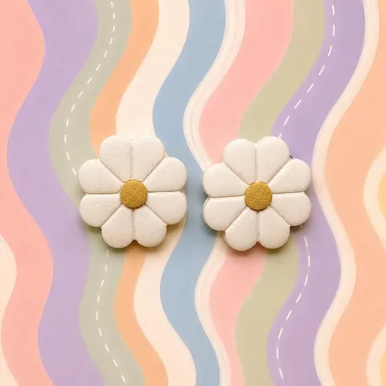
Aros Margaritas Blancas$5.990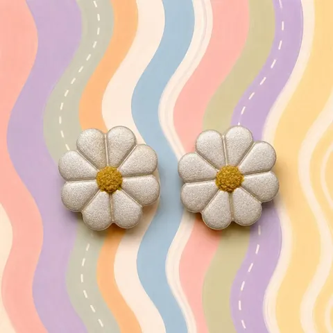
Aros Margaritas Blanco Perla$5.990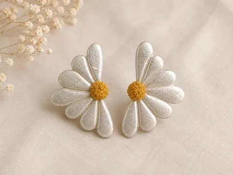
Aros Margaritas Blanco Perla$5.990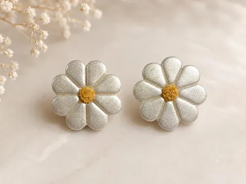
Aros Margaritas Blanco Perla$2.990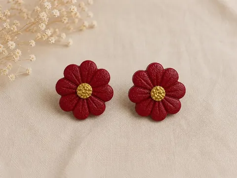
Aros Margaritas Rojas$2.990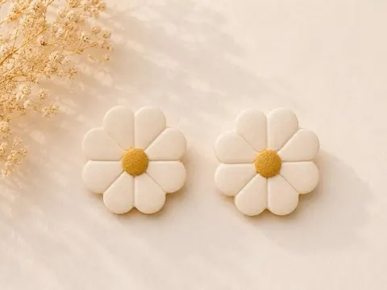
Aros Margaritas Blancas$2.990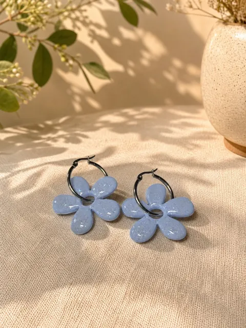
Aros Flor Argolla Celeste Brillos$10.990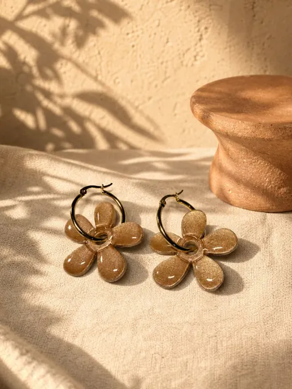
Aros Flor Argolla Cobre$10.990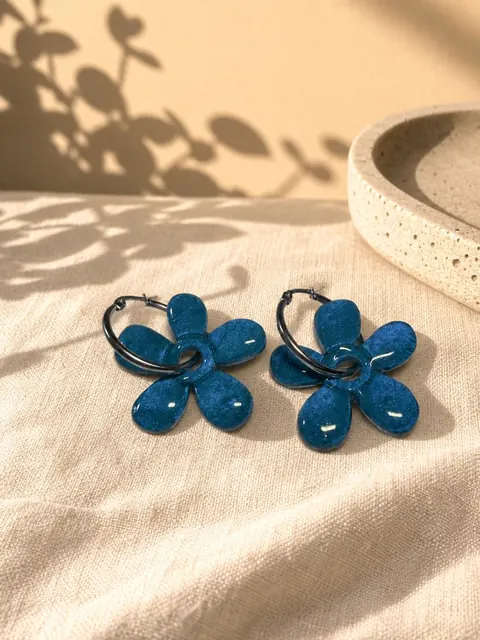
Aros Flor Argolla Azul$10.990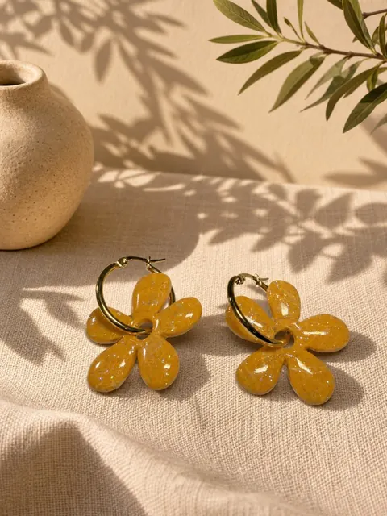
Aros Flor Argolla Mostaza Brillos$10.990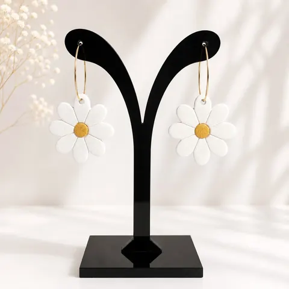
Aros Flor Argolla Margarita$6.990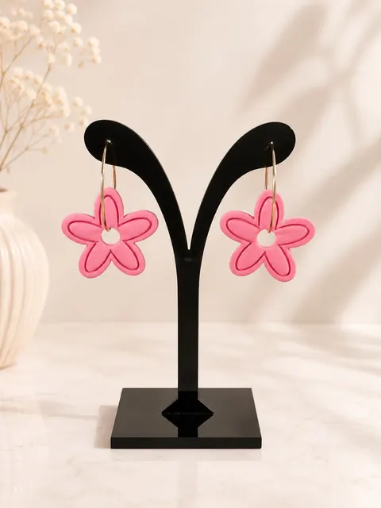
Aros Flor Rosa$6.990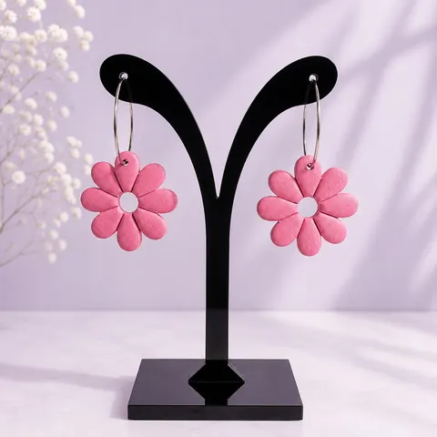
Aros Flor Rosa$6.990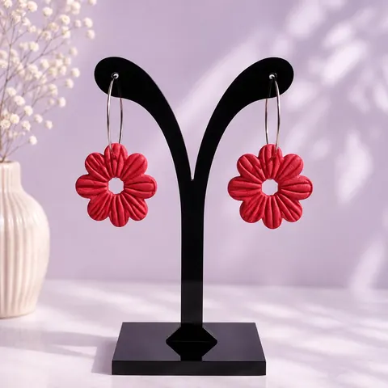
Aros Flor Roja$6.990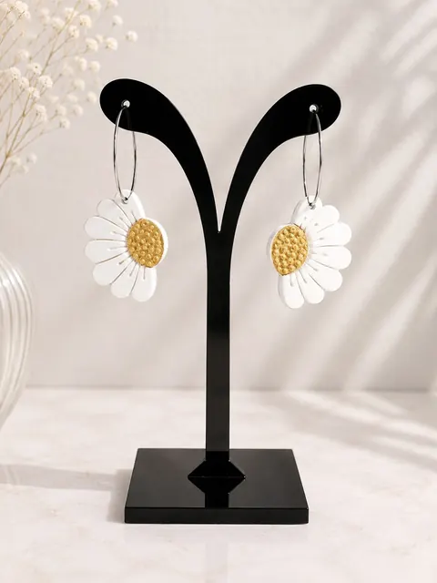
Aros Media-Flor Argolla Margarita$6.990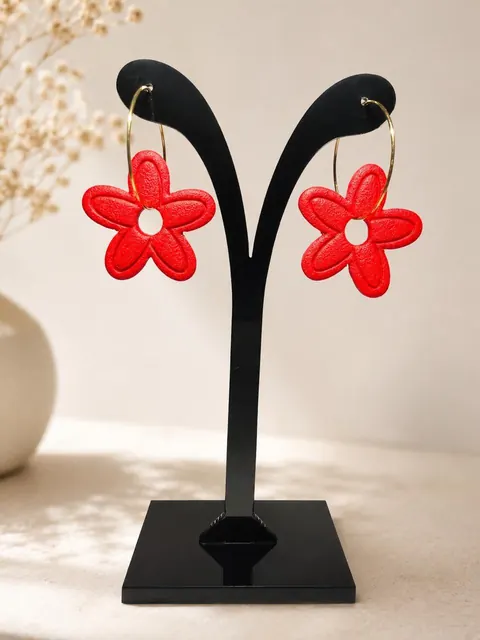
Aros Flor RoJa$6.990